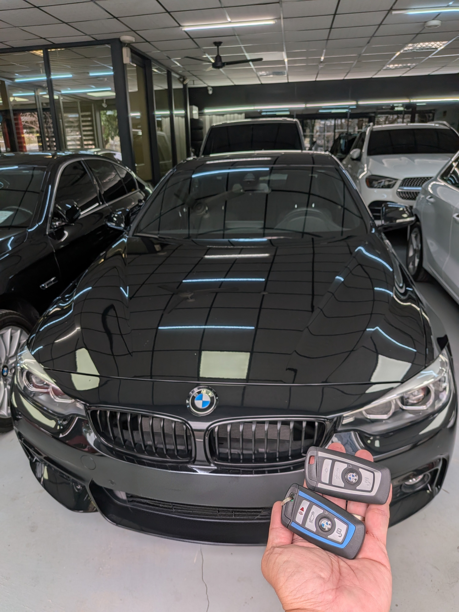

BMW F 世代智慧鑰匙案例示意，車主可先整理車款年份、鑰匙狀態與停放條件。
BMW F 世代鑰匙問題，先確認這些資訊
BMW F 世代不同年份與車型差異不小，像是 F20、F22、F30、F10、F25、F15、F01/F02 等，判斷方向都會受到是否還有備用鑰匙、儀表提示、停放位置與現場條件影響。先把資訊整理好，比直接只問價格或只報車名更有效率。
車主詢問前可先準備
- 車型與年份：例如 BMW 118、320i、520d、X3、X5，並補充年份或底盤世代。
- 目前鑰匙狀態：是全部遺失、只剩一支，還是遙控可以開門但無法啟動。
- 儀表與停放條件：提供儀表提示、地下室或拍場等現場照片，避免只靠口述猜測。
服務區域與適用情境
台中
彰化
南投
苗栗
雲林
跨區預約
這篇頁面主要對應 BMW F 世代車款，例如 F20、F22、F30、F10、F25、F15、F01/F02 等。若車輛位於地下室、拍場、保修廠或路邊，先提供現場照片，方便判斷是否適合到場評估。